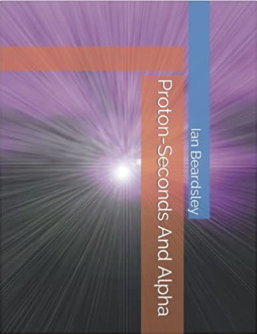
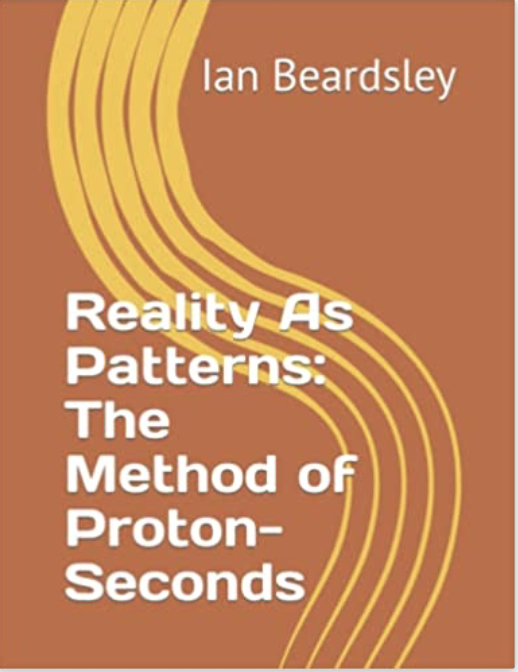

Contact
Contact
Contact: eanbardsley@gmail.com
Click to buy Proton-Seconds And Alpha
Click to buy Reality As Patterns: The Method of Proton-Seconds
Click to buy From Stokes Theorem, Divergence Theorem, And Proton-Seconds
Click to buy From Proton-Seconds And Quanta (hardback, paperback, kindle)

Ian Beardsley designed and maintains this website. You might be interested in visiting his sites: